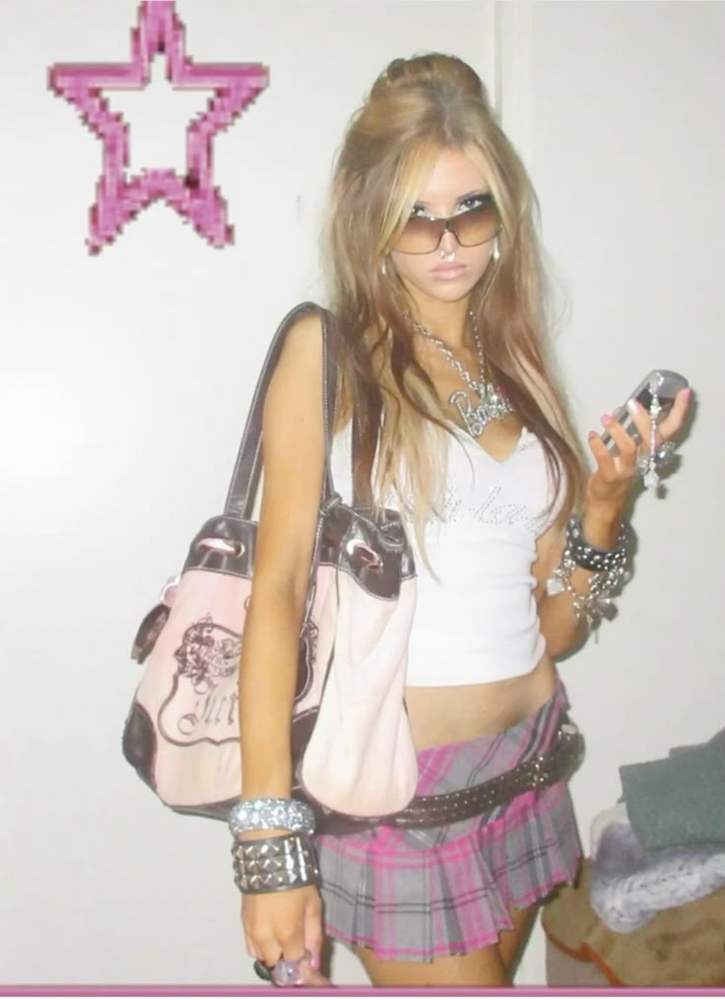
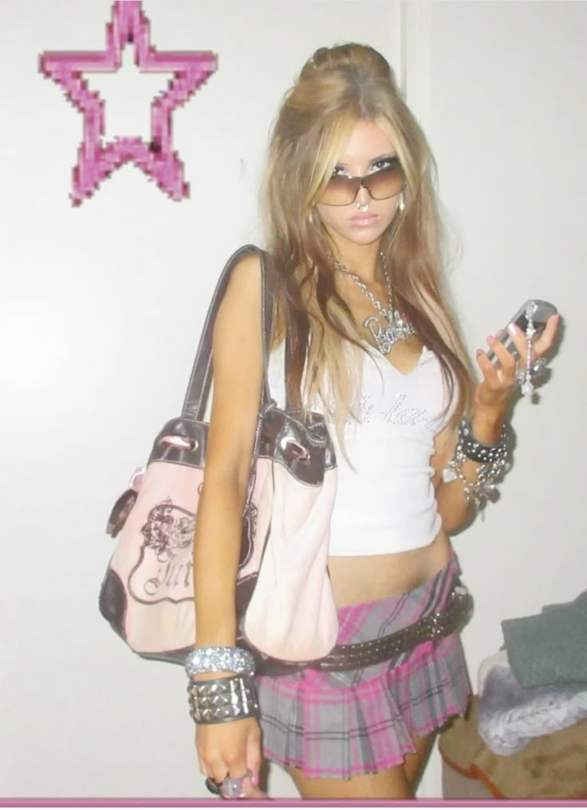

Frosted Eyeshadow

Glossy Lips

Glitter Mascara
 


Remember digging through your caboodle for that strawberry Lip Smacker? Or stealing your sister’s glitter mascara? This era was peak ✨extra✨ — and we loved every second.